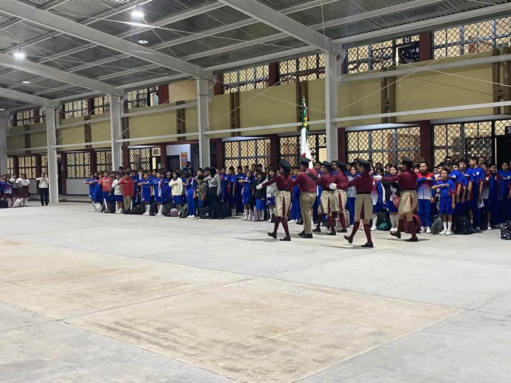

ITACE Reynosa acerca su oferta educativa a futuros estudiantes
Personal del ITACE Plantel Reynosa visitó la Escuela Secundaria General No. 7 para presentar a estudiantes de tercer grado las diferentes opciones de formación académica y técnica que ofrece la institución.
La actividad fortaleció la vinculación educativa y acercó nuevas oportunidades de desarrollo a las futuras generaciones.
✦ Oferta educativa Ver noticia completa ↗